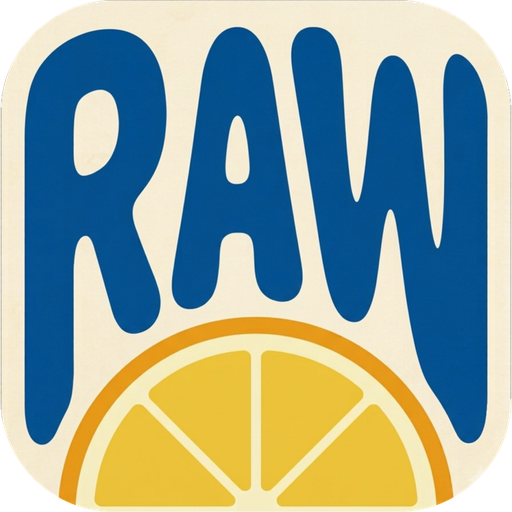

Finish it before you post it
A RAW editor for Mac, made for people who put their photos online. Develop the file, protect the people in it, give it the mood you want, and export it ready to upload — all without leaving the app.
Coming to the Mac App Store 7-day free trial · macOS 14 or laterProfessional developing tools are excellent with color, but they stop short of the part where the photo goes online. The stranger at the next table, the license plate down the alley, the GPS coordinates still sitting in the file — sooner or later you open yet another app. Rawcookr brings that last step into developing itself.
Rawcookr finds unfamiliar faces and vehicle license plates in your café, travel and street photos, then blurs or pixelates them. Detection runs on the full-resolution file rather than a downscaled preview, so small faces far in the background are caught too. Every detected region can be switched on or off individually, and you can draw your own.
All detection happens on your Mac. Your photos never leave the device.A digital take on the optical diffusion filters that cost a small fortune. Light blooms gently, highlights melt, and a stepped strength control carries you from a faint haze to an unmistakably cinematic look. A classic mode lets the glow spread into the shadows as well.
Screw a filter onto a lens and you are committed. Here you can change your mind at any time — and more optical filter effects are on the way.Put a much-loved film look on a photo with a single click, then shape the tone, color, grain and tint until it becomes a film of your own. Register a LUT (.cube) you already have as a film, or capture only the color you have just dialled in and save that as a new one.
Export a finished recipe book as one file to share with friends or followers. The custom films a recipe depends on travel inside it, so the color lands the same on their screen.Exposure, contrast, highlight and shadow recovery and white balance, plus tone curves, eight-band hue and saturation, levels and three-way color balance. Purple and green fringing removal, local adjustments through gradient, radial and brush masks, lens distortion correction and horizon straightening are all here.
Your original file is never modified. Every edit is kept separately, so you can always return to where you started.Like the data back of a film camera, Rawcookr prints the shooting date in the corner of the photo. The date is read from the file's own capture information, so it cannot be invented — only the order of the numbers is yours to choose.
The amber digits of old film prints, reproduced down to the slant.The small chores that come after developing, handled for you.
GPS coordinates are stripped on export, so your home and regular haunts don't travel with the photo.
Scale down by percentage, width or long edge in one pass. Never enlarged beyond the original.
JPEG, HEIF, PNG, WebP and 16-bit TIFF, with quality set anywhere from 1 to 100%.
Every selected photo exported with its own edits, and the folder opened for you when it's done.
Square, 4:5, 16:9 and more — add borders so the feed doesn't crop your composition away.
Develop the same frame several ways and compare them side by side.
The hours that disappear before and after developing, given back.
Open a folder and thumbnails appear right away. Rate, flag and filter down to what matters.
Saved presets are shown applied to the photo in front of you, not just listed by name.
Move the look you built on one frame onto everything else from the same scene.
Hide every panel and fill the screen with the photo. Nothing to distract you while judging color.
Try it first, decide later.
₩50,000 billed yearly · every feature included
7-day free trial올리기 전에, 끝내는 사진 앱
블로그와 SNS에 사진을 올리는 사람을 위해 만든 Mac용 RAW 현상 앱. 현상부터 초상권 처리, 감성 보정, 업로드용 내보내기까지 — 여러 앱을 오갈 필요 없이 한 자리에서 끝납니다.
Mac App Store 출시 준비 중 7일 무료 체험 · macOS 14 이상전문 현상 도구는 색을 다루는 데는 훌륭하지만, 사진을 온라인에 올리는 과정은 돌봐주지 않습니다. 카페에 앉은 다른 손님의 얼굴, 골목에 세워진 차의 번호판, 파일에 남은 촬영 위치 정보 — 결국 다른 앱을 하나 더 켜게 됩니다. Rawcookr는 그 마지막 단계를 현상 과정 안으로 가져왔습니다.
카페·관광지·길거리에서 찍은 사진 속 낯선 사람의 얼굴과 자동차 번호판을 자동으로 찾아 블러 또는 모자이크로 처리합니다. 인식은 축소 화면이 아니라 원본 해상도에서 이뤄져 멀리 있는 작은 얼굴까지 놓치지 않고, 잡아낸 영역은 하나씩 켜고 끄거나 직접 그려 추가할 수 있습니다.
모든 인식은 Mac 안에서만 처리됩니다. 사진이 서버로 올라가는 일은 없습니다.수십만 원짜리 광학 디퓨전 필터의 느낌을 디지털로 구현했습니다. 빛이 부드럽게 번지며 하이라이트가 풀리고, 단계별로 세기를 조절해 은은한 공기감부터 확실한 시네마틱 룩까지 만들 수 있습니다. 암부까지 퍼지는 클래식 모드도 함께 제공합니다.
렌즈 앞에 무언가를 끼우면 되돌릴 수 없지만, 여기서는 언제든 다시 조절할 수 있습니다. 다른 광학 필터 효과도 순차적으로 추가됩니다.널리 사랑받아 온 필름 스타일을 한 번의 클릭으로 사진에 입히고, 거기서부터 톤·컬러·입자·색조를 다듬어 나만의 필름을 만듭니다. 가지고 있는 LUT(.cube) 파일을 필름으로 등록할 수도 있고, 지금 맞춰 둔 색만 뽑아 새 필름으로 저장할 수도 있습니다.
완성한 레시피는 레시피북 파일 하나로 내보내 친구나 팔로워와 나눌 수 있습니다. 레시피가 쓰는 커스텀 필름까지 함께 담겨 상대방 화면에서도 같은 색이 나옵니다.노출·대비·명부/암부 복구·화이트 밸런스는 물론, 톤 커브, 8밴드 색조·채도, 레벨, 3방향 색상 균형까지 제대로 갖췄습니다. 보라·초록 색수차 제거, 그라디언트·원형·브러시 마스크를 이용한 부분 보정, 렌즈 왜곡 보정과 수평 조절도 지원합니다.
원본 파일은 절대 수정되지 않습니다. 모든 편집은 따로 기록되어, 언제든 처음으로 되돌릴 수 있습니다.필름 카메라 데이터백처럼 촬영 날짜를 사진 구석에 새깁니다. 날짜는 사진에 기록된 촬영 정보에서 그대로 가져오기 때문에 꾸며낼 수 없고, 표기 순서만 문화권에 맞게 고를 수 있습니다.
오래된 필름 사진 특유의 주황빛 숫자가 기울기까지 그대로 재현됩니다.현상이 끝난 뒤에 해야 하는 자잘한 일들을 앱이 대신합니다.
내보낼 때 GPS 정보를 지웁니다. 집이나 자주 가는 장소가 사진에 남지 않습니다.
배율·가로 픽셀·긴 변 기준으로 한 번에 줄여 저장합니다. 원본보다 커지지 않도록 제한됩니다.
JPEG · HEIF · PNG · WebP · 16비트 TIFF. 품질도 1~100%로 직접 지정할 수 있습니다.
고른 사진 전부에 각자의 편집을 적용해 일괄 저장하고, 끝나면 폴더를 바로 열어 줍니다.
정사각형·4:5·16:9 등 SNS 비율에 맞춰 여백을 둘러 잘리지 않게 올릴 수 있습니다.
같은 사진을 색만 달리해 여러 버전으로 현상하고 나란히 비교할 수 있습니다.
현상 전후로 흘려보내는 시간을 아끼도록 만들었습니다.
폴더를 열면 곧바로 썸네일이 뜹니다. 별점과 깃발로 고르고 원하는 조건만 걸러 봅니다.
저장해 둔 프리셋이 지금 이 사진에 적용된 모습으로 보입니다. 이름만 보고 고르지 않아도 됩니다.
한 장에 맞춘 보정을 같은 자리에서 찍은 다른 사진들에 그대로 옮깁니다.
패널을 모두 감추고 사진만 전체 화면으로. 색을 판단할 때 방해받지 않습니다.
먼저 써 보고 결정하세요.
연간 결제 시 ₩50,000 · 모든 기능 포함
7일 무료 체험